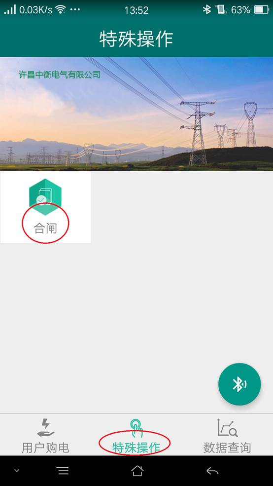

欢迎您使用本公司的智能蓝牙费控保护控制系统。
尊敬的用户您好:欢迎您使用本公司的智能蓝牙费控保护控制系统。
本系统集预存电费，电表数据抄读，线路保护，计量错误接线保护，故障跳闸原因查询，建议处理方案，非接触安全送电等多种功能为一体的综合服务平台。
为了您能更好的体验使用本产品，请您务必耐心仔细阅读以下操作使用说明。请您在供电部门完成购电后来到您的设备安装50米范围之内，注意面对您的设备.打开您的手机设置蓝牙选项，
本系统集预存电费，电表数据抄读，线路保护，计量错误接线保护，故障跳闸原因查询，建议处理方案，非接触安全送电等多种功能为一体的综合服务平台。
为了您能更好的体验使用本产品，请您务必耐心仔细阅读以下操作使用说明。请您在供电部门完成购电后来到您的设备安装50米范围之内，注意面对您的设备.打开您的手机设置蓝牙选项，
点击打开手机设置选项的蓝牙功能菜单。
搜索扫描周围的蓝牙设备，您的设备蓝牙和您软件登陆的用户名后三位数是一致的，如您的登陆用户名是037400077，那么你搜索的蓝牙设备名字是ZHDQ077，点击该蓝牙设备，提示您输入配对密码，您的设备配对密码是您用户名的后四位数，密码也就是0077，点击确定即可
配对成功之后，退出手机设置菜单，点击进入我公司的 中衡电气手机APP软件，点击登录
中衡电气手机APP软件，点击登录
中衡电气手机APP软件，点击登录
然后点击手机屏幕软件下方的 数据查询 主菜单—购电记录子菜单。
进入如下界面,点击这条未上传设备的记录，稍等几秒即可进入以下界面
点击界面上的电费录入功能按钮，进入下级界面
请点击选择刚才您在手机设置里配对好的蓝牙设备，注意点击一次即可，请您耐心等待几秒，您的手机正在和我公司的蓝牙设备进行配对连接，然后会出现以下界面
出现当前连接设备名称，您点击电费录入即会提示您购电成功，恭喜您已经完成了购电上传设备的流程。
如果您已经出现欠费停电，要恢复供电，请您点击软件下方的主菜单特殊操作子菜单，点击合闸操作子菜单

进入如下界面，这个时候您就不需要再次手动连接蓝牙了，软件会自动的连接您的现场设备的蓝牙
您点击合闸，这时就会提示您合闸成功，您已经完成了有费合闸，假如您的上次电费还没有使用为0 ，您的设备还是合闸状态，那您就不需要执行特殊操作里面的合闸了。
假如您想查看自己的剩余电费和电表度数等参数，请您点击数据查询主菜单里面的电费余额和电量查询子菜单，
点击上面的电费余额查询，电量查询或者功率查询即可瞬时完成此项数据的查询工作，这个时候您也不需要再次连接蓝牙，手机APP会自动的连接设备。电量数据和功率数据会自动保存在您的手机APP里，如需要查开以前电表数据，您打开数据查询主菜单里的电量报表和功率报表子菜单，即可查看到您以前抄读的电表数据。
第二次购电后您可以按以上流程完成电费录入，这个时候您就不需要输入蓝牙的配对密码了，手机APP会自动记忆保存您首次输入的密码。快速的完成设备连接，电费录入工作。
假如您使用的是我公司最新型的产品，，如果您的设备出现了跳闸停电的情况，您可以打开我公司的APP软件，进入数据查询主菜单下故障查询子菜单，点击故障查询，即可读出您的设备跳闸的故障原因了，假如是因为保护动作，请您慎重考虑是否合闸，也可电话求助供电部门，帮你处理故障并恢复供电。假如是预付费引起的跳闸。请您续交电费即可。假如您的设备出现跳闸的次数比较频繁，请您查看定值设置是否与您的变压器容量相匹配，假如数据设置不匹配，请您申请供电部门前来帮您调整定值参数。我们会在对应的故障后面给出处理故障的建议，该建议仅供您参考，不做为您处理故障的依据。
常见问题
-
1.客户如何下载客户端？
-
目前公司的APP软件只支持安卓系统4.4以上版本手机，苹果系统是不支持的，请您尽量用安卓系统手机扫描二维码安装。
-
2.客户端下发电费到设备，请您带好您的手机，在设备安装表箱的正面，距离50米内，打开软件搜索设备。（您在设备安装表箱的后面有可能因为表箱的屏蔽，您的手机不能搜索到我们的设备）
-
3.当您发现您的设备报警灯不停闪烁时，您的电量已经到了您当初预设的金额了，请您及时缴纳电费。您这时可以通过APP软件，打开特殊操作里面的合闸，操作合闸一次。报警就自动解除了。
-
4.连接不上设备蓝牙怎么办？
-
检查您的手机蓝牙版本是什么，仔细检查您的蓝牙配对密码是否输入正确，您的蓝牙密码后三位和您要连接的蓝牙设备名称后三位及您的APP登陆用户名后三位是一致的。
-
5.您的设备上报警闪烁怎么办？
-
这个时候可能是您的预存电费不足引起的报警，也可能是您的设备保护动作引起的报警，您可以通过手机APP—数据查询—故障查询功能详细查看原因。
-
6.开关跳闸后APP和手动均不能恢复供电？
-
这是因为您的已经出现欠费情况，请您及时续交电费。或者是变压器端出现故障，请您联系供电部门协助您排除故障，APP软件提供的故障解决方案仅供您参考，不作为最终处理故障的依据，您的故障排除之后，即可用手动或者APP软件上的合闸操作送电了。
-
7.程序安装后打开提示强制停止运行怎么办？
-
请您卸载程序，重新扫描二维码安装，在安装的过程中。手机会提示你选择运行软件需要的授权，请您选择 允许 来对软件进行授权。